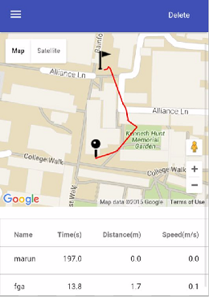

Instructions
This app has 2 main pages:1. Record Page
Here, you can view your location, which is labelled with a red pin. When you tap on this pin, you can view the accuracy of the location shown. This value represents the radius of a circle in which any point can be your actual location. Thus, the smaller this radius, the more accurate the displayed location. The information window also displays the status of the app: not recording, recording or recorded.
Once you're ready for a run, press the "Start" button at the top of the screen. During your run, your route will be tracked with a red line. When you finish your run, press "Stop", and you will be asked whether you want to save the run. If you press "OK", you will be prompted to enter a name for the run, or you can press "Cancel" to discard it. Then you can choose to "Clear" the recorded route from your map, and "Start" another run. If you want to go back to menu, you can access the navigation draw with the button on the top left corner, and tap "Back to Menu".
You can also change the view of the Map to "Satelitte" mode should you wish, or you can change it to street view by dragging the orange man from the buttom right corner to any point on the map. You can also zoom in or out using the "+" or "-" buttons.
2. View Page
Here, you can view the details of all your saved runs in the table. If you want to view any run's route on the map, simply tap on the row that contains the details of the run. You can then press delete whenever you want to delete the selected run. By holding the phone in landscape mode you can view the calories burned as well.